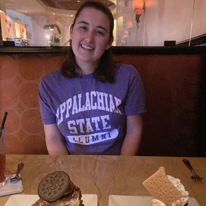

Our research is centered on four themes:
Learning in Organic Chemistry
- How do learners ascribe meaning to reaction mechanisms?
- How can we develop tools to measure such learning?
- How can we design experiences to promote learning of reaction mechanisms and sophisticated reasoning?
Learning in Inorganic Chemistry
- How do faculty members teaching inorganic chemistry respond to measures of learning and learners' affective experiences when seeking to transform their courses?
Faculty Member Professional Development
- How do faculty members use assessments and the education research literature when developing and refining their instructional practices?
Measurement and Psychometrics
- How do we measure non-cognitive learning and affective experiences in the context of chemistry learning?
- How do non-cognitive and affect measures inform course and program-level assessment?
Our research is currently funded through two National Science Foundation grants:
News & Updates
-
Congratulations Dr. Brandon J. Yik
Congratulations to Dr. Brandon J. Yik for successfully defending their dissertation today! Dr. Yik is the fourth student to graduate a Ph.D. from the Raker Research Group.
Jeffrey R. Raker, Principal Investigator

Jeff (he/him/his) is an Associate Professor in the Department of Chemistry at the University of South Florida, having joined the faculty as an Assistant Professor in 2013. Jeff concurrently serves as the Associate Director of the ACS Examinations Institute.
He received his undergraduate degree in chemistry at Ohio Northern University (Ada, Ohio) in 2003, and a Master of Arts degree in college student personnel at Bowling Green State University (Bowling Green, Ohio) in 2005. Jeff obtained his Ph.D. in chemistry from Purdue University (West Lafayette, Indiana) in 2011 working with Professor Marcy Towns.
He was a postdoctoral research associate with the ACS Examinations Institute (hosted by Iowa State University at the time) from 2011 to 2013 with Professor Thomas Holme.
Jeff has authored and collaborated on over 60 peer-reviewed publications (Google Scholar), contributed chapters to revised editions of the ACS Exams General Chemistry and Organic Chemistry Study Guides, given over 20 invited seminars and research talks, and contributed to over 100 conference talks, papers, and posters.
Jeff is a queer/gay chemist, proud uncle/guncle, Disney enthusiast, amateur baker and chef, and bow tie maker.
Group Members
Current Group Members
Dr. Megan Connor

Postdoctoral Research Associate
B.S., 2016, Chemistry, University of North Carolina - Chapel Hill
Ph.D., 2021, Chemistry, University of Michigan
Joined: Summer 2021
Stephanie Frost

Graduate Student
B.S., 2021, Chemistry and French, University of Wisconsin-Madison
Joined: Fall 2021
Caroline Crowder

Graduate Student
B.S., 2022, Chemistry, Florida State University
Joined: Fall 2022
Kendall Zammit
Graduate Student
B.S., 2022, Chemistry (ACS Certified) and Secondary Education, Appalachian State University
Joined: Fall 2022
Former Doctoral Research Students
Dr. Rebecca Gibbons
Ph.D., Chemical Education
Dissertation Defense: June 12, 2018
Assistant Director of Assessment, University of South Florida
Dr. Amber Dood
Ph.D., Chemical Education
Dissertation Defense: February 26, 2020
Postdoctoral Researcher, University of Michigan
Dr. Aaron Clark
Ph.D., Chemical Education
Dissertation Defense: January 28, 2021
Lecturer, Yale University
Dr. Brandon J. Yik
Ph.D., Chemical Education
Dissertation Defense: October 4, 2022
Postdoctoral Researcher, University of Virginia
Former Postdoctoral Research Associates
Dr. Sachel Villafañe-Garcia
ACS Exams, 2015-2016
Faculty, California State University - Fullerton
Dr. Xiaoying Xu
2016-2017
Data Analyst, Muma College of Business, University of South Florida
Dr. Shalini Srinivasan
ACS Exams, 2017-2018
Faculty, Metropolitan State University of Denver
Dr. Justin Pratt
2019-2020
Faculty, University of Rhode Island
Former Masters Degree Students
Benjamin Van Norman
M.A., Chemical Education
Graduated: Summer 2016
Caitlin Zumalt
M.A., Chemical Education
Graduated: Summer 2018
Former Undergraduate Students
Jessica M. Leon
Honors Thesis
Major: Secondary Mathematics Education
Graduated: Spring 2015
Bryan Pacheco
Major: Microbiology
Graduated: Spring 2015
Janier Duran
Major: Biology
Graduated: Summer 2015
Yanci Algarin
Major: Integrative Animal Biology
Graduated: Fall 2016
Alaina Keith
Major: Health Science
Graduated: Spring 2017
Emily Laga
Major: Biomedical Sciences
Graduated: Spring 2017
Joshua Vega
Honors Thesis
Major: Cell and Molecular Biology
Graduated: Spring 2018
Zoraida Laremont
Major: Cell and Molecular Biology
Graduated: Spring 2018
Publications
For the most up-to-data listing of publications from the Raker Research Group, please visit Dr. Raker's Google Scholar Page.